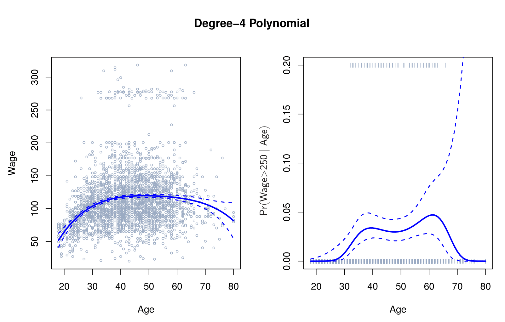
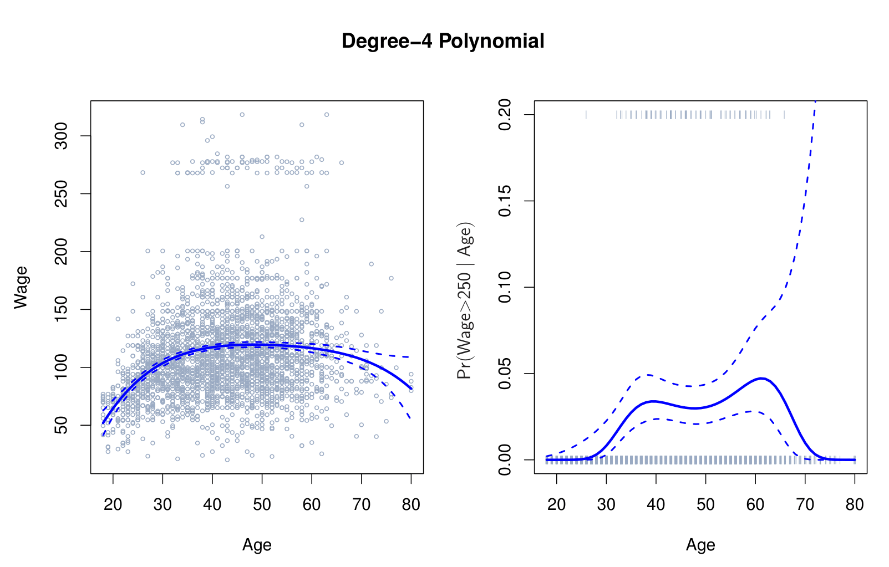
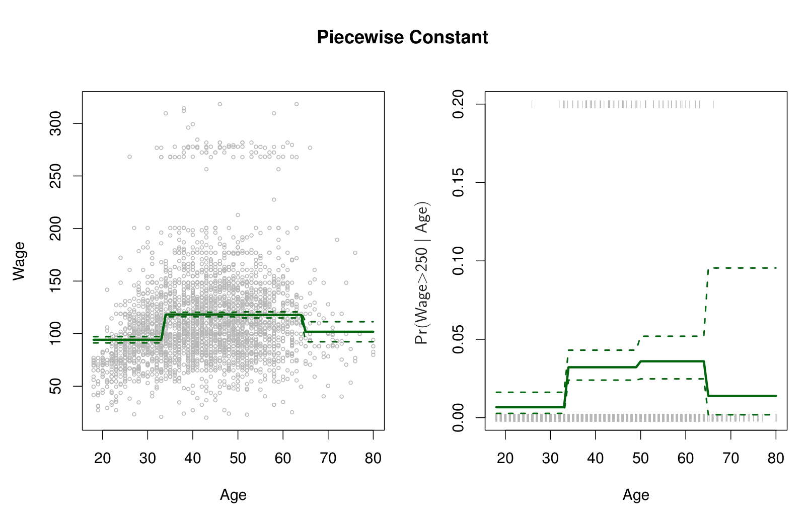
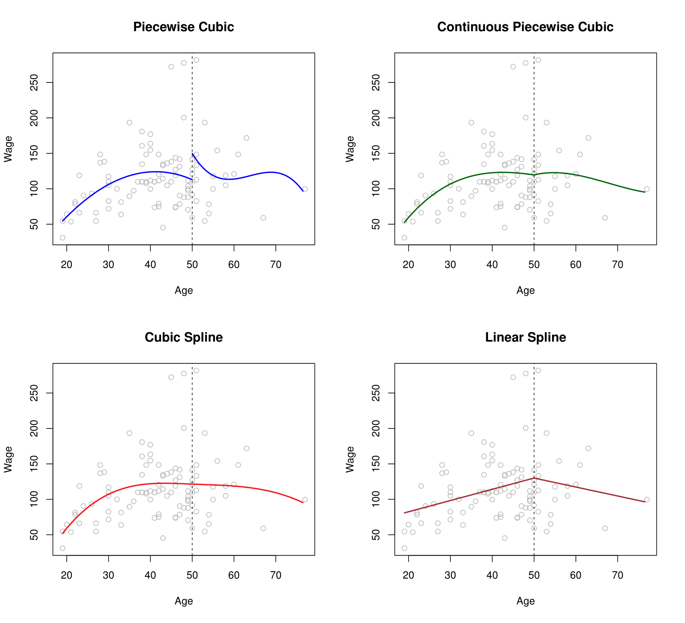
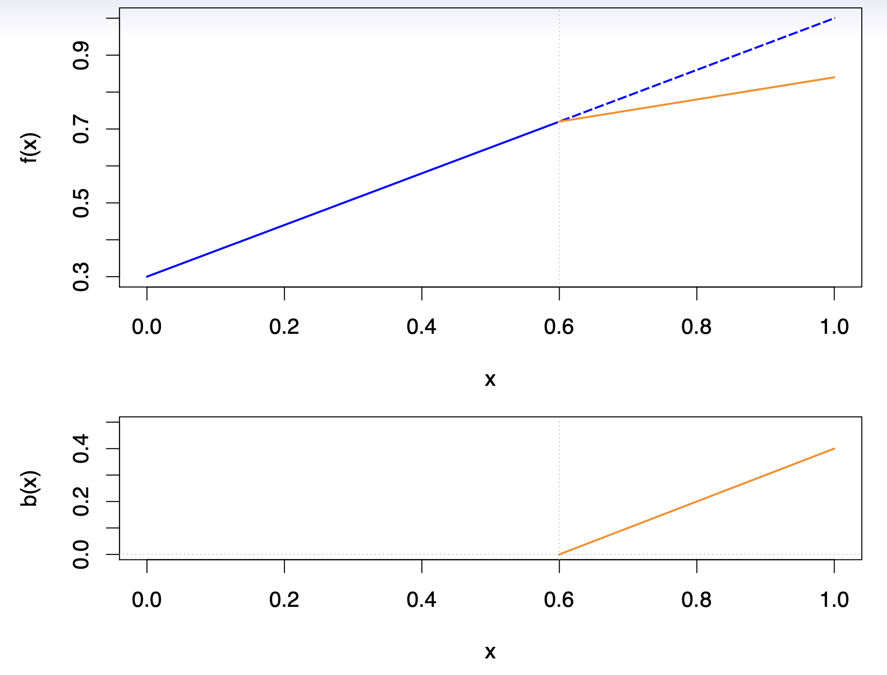
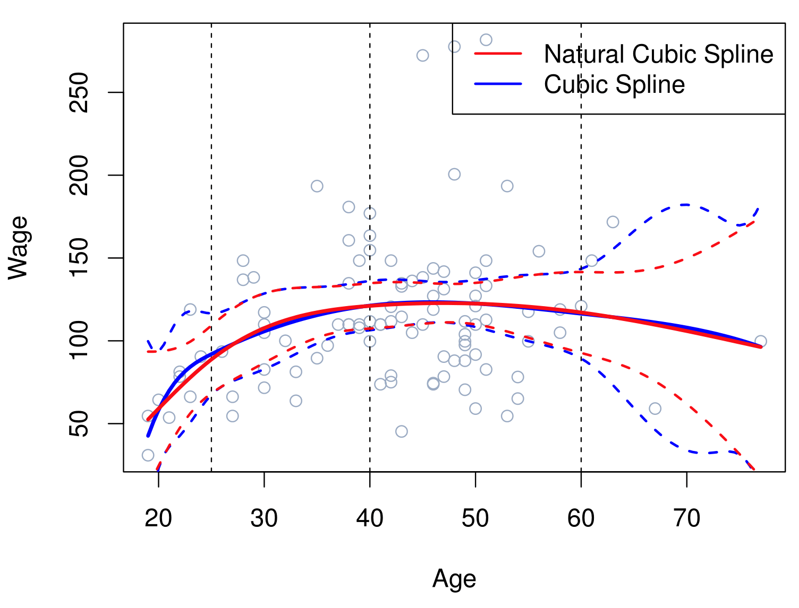
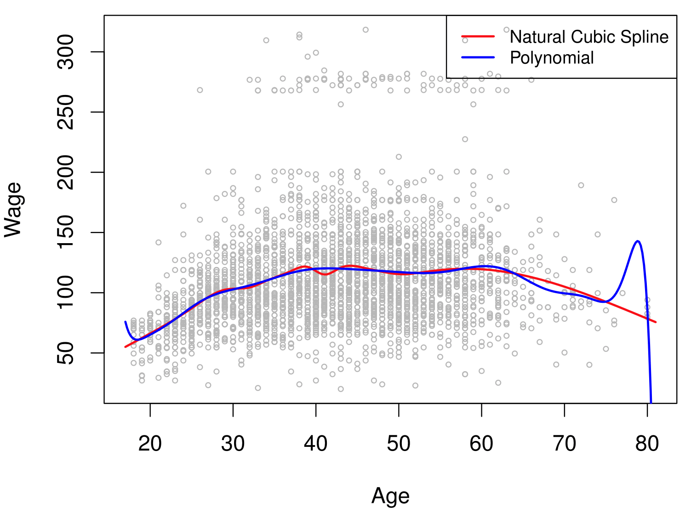
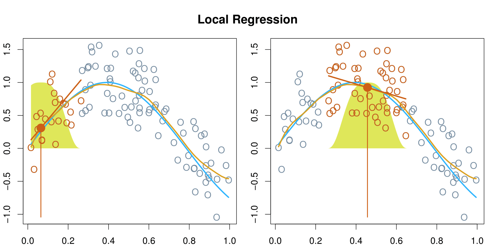
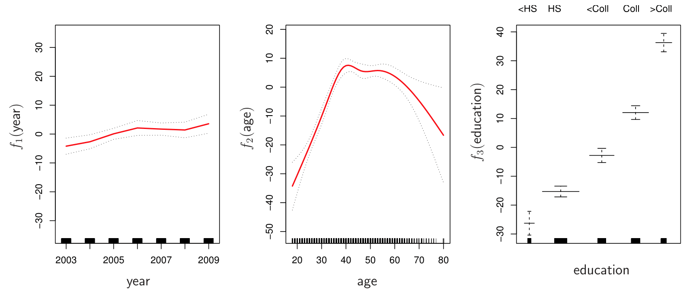
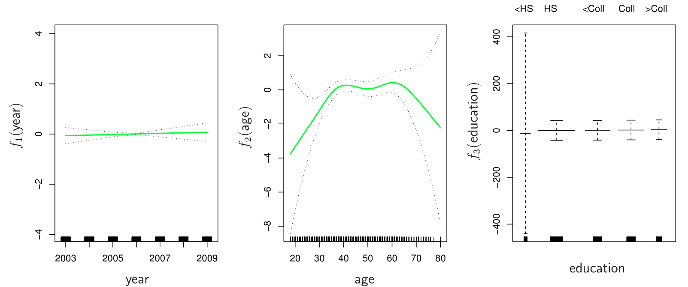

Beyond Linearity
The truth is never linear!
Or almost never!
But often the linearity assumption is good enough.
When it’s not…
offer a lot of flexibility, without losing the ease and interpretability of linear models.
Polynomial regression extends the linear model by adding extra predictors, obtained by raising each of the original predictors to a power. It provides a simple way to provide a non-linear fit to data.
\[ y_i = \beta_0 + \beta_1 x_i + \beta_2 x_i^2 + \beta_3 x_i^3 + \dots + \beta_d x_i^d + \epsilon_i \]

Create new variables \(X_1 = X, \, X_2 = X^2\), etc., and then treat as multiple linear regression.
It is linear in the coefficients, but it is a non linear function of \(x\).
Not really interested in the coefficients; more interested in the fitted function values at any value \(x_0\):
\[ \hat{f}(x_0) = \hat{\beta}_0 + \hat{\beta}_1 x_0 + \hat{\beta}_2 x_0^2 + \hat{\beta}_3 x_0^3 + \hat{\beta}_4 x_0^4. \]
Since \(\hat{f}(x_0)\) is a linear function of the \(\hat{\beta}_\ell\), can get a simple expression for pointwise-variances (\(\text{Var}[\hat{f}(x_0)]\)) at any value \(x_0\).
How to choose \(d\), the polinomial degree? We either fix the degree \(d\) at some reasonably low value or use cross-validation to choose \(d\).
\[ \text{Pr}(y_i > 250 \mid x_i) = \frac{\exp(\beta_0 + \beta_1 x_i + \beta_2 x_i^2 + \dots + \beta_d x_i^d)}{1 + \exp(\beta_0 + \beta_1 x_i + \beta_2 x_i^2 + \dots + \beta_d x_i^d)}. \]
To get confidence intervals, compute upper and lower bounds on on the logit scale, and then invert to get on the probability scale.
Can do separately on several variables—just stack the variables into one matrix, and separate out the pieces afterwards (see GAMs later).
Caveat: Polynomials have notorious tail behavior — very bad for extrapolation. So, it is not recommended to trust predictions near the end of the data.
Step functions cut the range of a variable into \(K\) distinct regions in order to produce a qualitative variable. This has the effect of fitting a piecewise constant function.
\[ C_1(X) = I(X < 35), \quad C_2(X) = I(35 \leq X < 50), \dots, C_3(X) = I(X \geq 65) \]

A step function model partitions the range of a predictor variable \(X\) into multiple intervals and creates a set of dummy (0/1) indicators—one for each interval. By fitting a standard linear model with these dummy variables, the resulting function is piecewise constant: within each interval, the fitted value remains the same.
Local (Step Functions): Because each interval in a step function acts independently, changes in one interval have minimal or no effect on the fitted values in other intervals. Consequently, step functions allow a locally controlled fit, where data in a specific region of \(X\) only affect the parameters corresponding to that interval.
Global (Polynomials): In contrast, polynomial models rely on parameters that apply across the entire range of \(X\). Consequently, if you alter a single data point or a small set of points in one region, those changes can influence the fitted function everywhere else. This global dependence can lead to dramatic shifts in the estimated curve.
Simplicity: Step functions are conceptually straightforward and easy to implement, requiring only the definition of intervals and fitting dummy variables.
Local Control: Their piecewise nature can be beneficial when the true relationship changes abruptly or when you want to minimize the effect of outliers in one region on the fit elsewhere.
But there are some Drawbacks:
Overall, step functions provide an intuitive, locally controlled alternative to global polynomial models. However, the abrupt transitions and the need to specify breakpoints can limit their practical appeal—particularly for applications where a smooth or continuous functional form is desired.
Easy to work with. Creates a series of dummy variables representing each group.
Useful way of creating interactions that are easy to interpret. For example, interaction effect of \(\text{Year}\) and \(\text{Age}\):
\[ I(\text{Year} < 2005) \cdot \text{Age}, \quad I(\text{Year} \geq 2005) \cdot \text{Age} \]
would allow for different linear functions in each age category.
While linear models are simple and often effective, real-world data frequently exhibit non-linear relationships, necessitating more flexible modeling approaches.
Regression splines are an extension and more flexible than polynomials and step functions.
They involve dividing the range of \(X\) into \(K\) distinct regions. Within each region, a polynomial function is fit to the data.
However, these polynomials are constrained so that they join smoothly at the region boundaries, or knots. Provided that the interval is divided into enough regions, this can produce an extremely flexible fit.
\[ y_i = \begin{cases} \beta_{01} + \beta_{11}x_i + \beta_{21}x_i^2 + \beta_{31}x_i^3 + \epsilon_i & \text{if } x_i < c; \\ \beta_{02} + \beta_{12}x_i + \beta_{22}x_i^2 + \beta_{32}x_i^3 + \epsilon_i & \text{if } x_i \geq c. \end{cases} \]
Better to add constraints to the polynomials, e.g., continuity.
Splines have the “maximum” amount of continuity.

Top-Left Panel: A third-degree polynomial is fitted to the data on the left side of the knot at \(X = 50\), and another (separate) third-degree polynomial is fitted on the right side. There is no continuity constraint imposed at the knot, meaning the two polynomials may not meet at the same function value at \(X = 50\).
Top-Right Panel: Again, a third-degree polynomial is fitted on each side of \(X = 50\). However, in this case, the polynomials are forced to be continuous at the knot. In other words, they must share the same function value at \(X = 50\).
Bottom-Left Panel: As in the top-right panel, a third-degree polynomial is fitted on each side of \(X = 50\), but with an additional constraint that enforces continuity of the first and second derivatives at \(X = 50\). This ensures a smoother transition between the left and right segments of the piecewise function.
Bottom-Right Panel: A linear regression model is fitted on each side of \(X = 50\). The model is constrained to be continuous at the knot, so both linear segments meet at the same value at \(X = 50\).
The predictor space is partitioned at a set of specified points called knots \(\{\xi_k\}\). A linear spline is a piecewise linear polynomial that remains continuous at each knot.
We construct linear spline models by augmenting a linear predictor with piecewise components that activate past designated knot locations, yielding a flexible yet interpretable approach to modeling relationships. Specifically:
\[ y_i = \beta_0 + \beta_1 b_1(x_i) + \beta_2 b_2(x_i) + \cdots + \beta_{K+1} b_{K+1}(x_i) + \epsilon_i, \]
where each \(b_k(\cdot)\) is a basis function.
One basis function, \(b_1(x_i)\), is simply \(x_i\). The others, \(b_{k+1}(x_i) = (x_i - \xi_k)_+\), capture local deviations after each knot \(\xi_k\).
The notation \((\cdot)_+\) denotes the “positive part,” meaning \(\max\{0, \cdot\}\). Therefore, \((x_i - \xi_k)_+ = x_i - \xi_k\) if \(x_i > \xi_k\), and 0 otherwise.
Essentially, below the smallest knot, the model is a simple linear function of \(x_i\). Once \(x_i\) passes a knot \(\xi_k\), the corresponding term \((x_i - \xi_k)_+\) begins to contribute, allowing the slope to change. This creates segments of potentially different slopes while maintaining continuity at the knots.
Continuity at Knots: Despite having distinct linear segments, the spline remains continuous at each \(\xi_k\). The continuity follows naturally from how \((\cdot)_+\) is defined. At a knot, \((x_i - \xi_k)_+\) transitions from 0 to a linear increase, ensuring no jumps in the fitted function.
Relevance
Flexibility: Linear splines allow for piecewise changes in slope rather than forcing a single global linear relationship. This can capture more nuanced relationships between predictors and responses.
Interpretability: Each knot \(\xi_k\) marks a point where the slope can adjust, making it straightforward to interpret how the effect of \(x_i\) differs below and above that knot.
Comparison to Polynomials: Unlike higher-order polynomials, splines can avoid the global distortion that arises from polynomial terms. A single outlier or a data pattern in one region does not overly influence the fit across the entire range of \(x\).
To illustrate a linear spline with one knot at \(x = 50\), suppose we have a response variable \(y\) (e.g., a person’s yearly wage) and a single predictor \(x\) (e.g., age):
\[ b_1(x_i) = x_i, \quad b_2(x_i) = (x_i - 50)_{+} \,=\, \begin{cases} x_i - 50, & \text{if } x_i > 50,\\ 0, & \text{if } x_i \le 50. \end{cases} \]
\[ y_i = \beta_0 + \beta_1 \, b_1(x_i) + \beta_2 \, b_2(x_i) + \epsilon_i, \]
\[ y_i = \beta_0 + \beta_1 \, x_i + \beta_2 \, (x_i - 50)_{+} + \epsilon_i. \]
3.For \(x_i \le 50\):
\[ y_i = \beta_0 + \beta_1 x_i + \epsilon_i \]
4.For \(x_i > 50\):
\[ \begin{aligned} y_i &= \beta_0 + \beta_1 x_i + \beta_2 (x_i - 50) + \epsilon_i \\ &= [\beta_0 - 50 \beta_2] + (\beta_1 + \beta_2) x_i + \epsilon_i \end{aligned} \]
Local Flexibility: Below 50, the effect of age on wage is governed by \(\beta_1\). Above 50, the slope can change to \(\beta_1 + \beta_2\).
Continuity at 50: Because the spline is forced to match up at \(x = 50\), there is no abrupt jump in the fitted curve.
Simplicity of Implementation: We only introduced one additional term \((x_i - 50)_+\) to capture the potential change in slope after age 50.

Top plot: shows two linear fits over the domain \(0 \le x \le 1\). The blue line represents a single global linear function (extending as the dashed line beyond the knot at \(x = 0.6\)), whereas the orange line demonstrates how adding a spline basis function allows the slope to change precisely at \(x = 0.6\).
Bottom plot: displays the corresponding basis function \(b(x) = (x - 0.6)_{+}\), which is defined to be zero for \(x \le 0.6\) and increases linearly for \(x > 0.6\). Because \(b(x)\) starts at zero at the knot, it does not introduce a jump—thus ensuring continuity—but it permits the slope to differ on either side of \(x = 0.6\).
A cubic spline with knots at \(\xi_k, \, k = 1, \dots, K\) is a piecewise cubic polynomial with continuous derivatives up to order 2 at each knot.
Again we can represent this model with truncated power basis functions:
\[ y_i = \beta_0 + \beta_1 b_1(x_i) + \beta_2 b_2(x_i) + \cdots + \beta_{K+3} b_{K+3}(x_i) + \epsilon_i, \]
\(b_1(x_i) = x_i,\)
\(b_2(x_i) = x_i^2,\)
\(b_3(x_i) = x_i^3,\)
\(b_{k+3}(x_i) = (x_i - \xi_k)_+^3, \quad k = 1, \dots, K\)
where
\[ (x_i - \xi_k)_+^3 = \begin{cases} (x_i - \xi_k)^3 & \text{if } x_i > \xi_k, \\ 0 & \text{otherwise}. \end{cases} \]
A natural cubic spline extrapolates linearly beyond the boundary knots. This adds \(4 = 2 \times 2\) extra constraints, and allows us to put more internal knots for the same degrees of freedom as a regular cubic spline.
One strategy is to decide \(K\), the number of knots, and then place them at appropriate quantiles of the observed \(X\).
A cubic spline with \(K\) knots has \(K + 4\) parameters or degrees of freedom.
A natural spline with \(K\) knots has \(K\) degrees of freedom.

Splines and piecewise polynomials build on the concept of dividing the predictor domain into segments, offering enhanced flexibility and precision over traditional polynomial models. By using different polynomial functions in various regions and ensuring smooth transitions at knots, these methods provide a powerful approach to capturing non-linear relationships in data.
Piecewise Polynomials: Replace a single global polynomial with multiple polynomials fitted across segments, resulting in a more tailored and adaptable fit.
Continuity Constraints: Enforcing continuity at knots ensures smooth transitions between polynomial segments, avoiding abrupt changes and better representing underlying trends.
Natural Cubic Splines: Add further constraints by requiring smoothness in the function’s second derivative at knots and controlling boundary behavior, ensuring robustness and reducing overfitting at extremes.
Flexibility and Local Adaptation: Piecewise polynomials adapt to local data behavior, making them particularly effective for capturing non-linear trends and abrupt changes in data. This adaptability is essential in real-world datasets that exhibit complex patterns.
Strategic Knot Placement: Properly placing knots, such as at quantiles of the predictor variable, ensures that each segment has adequate data coverage, resulting in more reliable and stable estimates.
Importance of Boundary Constraints: Natural cubic splines excel at controlling the function’s behavior near boundaries, mitigating overfitting and improving interpretability in regions with sparse data.
Advantages Over Traditional Polynomials: Splines overcome the limitations of global polynomial fitting, such as excessive wiggliness or global influence of outliers, providing smoother, more interpretable fits that align closely with the data’s natural structure.
Conclusion: Splines offer a superior method for non-linear modeling, combining flexibility, local adaptation, and smoothness, making them an indispensable tool in modern statistical analysis.
Smoothing splines are an extension of regression splines but arise in a different context. They are derived by minimizing a residual sum of squares criterion subject to a penalty for roughness, balancing data fidelity and smoothness.
The optimization criterion for fitting a smooth function \(g(x)\) to data is given by:
\[ \text{minimize}_{g \in S} \sum_{i=1}^n \left(y_i - g(x_i)\right)^2 + \lambda \int \left( g''(t) \right)^2 dt \]
Key Components:
Residual Sum of Squares (RSS): The first term, \(\sum_{i=1}^n \left(y_i - g(x_i)\right)^2\), ensures that the function \(g(x)\) fits the observed data points \((x_i, y_i)\) closely.
Roughness Penalty: The second term, \(\lambda \int \left( g''(t) \right)^2 dt\), penalizes the curvature of \(g(x)\) by integrating the square of its second derivative. This term controls how “wiggly” the function is and enforces smoothness.
Tuning Parameter \(\lambda\): The parameter \(\lambda \geq 0\) determines the tradeoff between fit and smoothness:
When \(\lambda = 0\): The penalty vanishes, and the function \(g(x)\) becomes fully flexible, interpolating all data points.
As \(\lambda \to \infty\): The penalty dominates, and \(g(x)\) becomes increasingly smooth, eventually reducing to a simple linear function.
Intuition: Smoothing splines allow for flexible, smooth fits that adapt to the structure of the data while avoiding excessive overfitting. By tuning \(\lambda\), analysts can strike a balance between capturing meaningful patterns and maintaining a smooth, interpretable curve.
Smoothing splines yield a natural cubic spline solution with a knot at every unique value of \(x_i\). Rather than choosing specific knot locations, practitioners select a single tuning parameter \(\lambda\), which balances data fidelity and smoothness through the roughness penalty.
Automatic Knot Placement: By placing a knot at each unique \(x_i\), smoothing splines avoid the need to manually choose knot positions. The smoothness parameter \(\lambda\) becomes the key lever for controlling model complexity.
Smoother Matrix: The fitted values can be written as
\[ \hat{g}_\lambda = \mathbf{S}_\lambda\,\mathbf{y}, \]
where \(\mathbf{S}_\lambda\) is an \(n \times n\) matrix determined by the locations of the \(x_i\) and the penalty \(\lambda\).
\[ \text{df}_\lambda = \sum_{i=1}^n \{\mathbf{S}_\lambda\}_{ii}, \]
i.e., the trace of the smoother matrix. A larger trace indicates a more flexible fit, while a smaller trace corresponds to a smoother, less flexible curve.
Specifying \(\text{df}\) Instead of \(\lambda\)
LOOCV
\[ \text{RSS}_{\text{cv}}(\lambda) = \sum_{i=1}^n \Bigl( y_i - \hat{g}_\lambda^{(-i)}(x_i) \Bigr)^2 = \sum_{i=1}^n \left[\frac{y_i - \hat{g}_\lambda(x_i)}{1 - \{\mathbf{S}_\lambda\}_{ii}} \right]^2, \]
where \(\hat{g}_\lambda^{(-i)}\) denotes the fitted function obtained by leaving out the \(i\)-th observation, and \(\mathbf{S}_\lambda\) is the smoother matrix.
Whether you fix the degrees of freedom directly or optimize \(\lambda\) via cross-validation, the goal is to strike a balance between fidelity to the data and smoothness of the spline.
Instead of selecting \(\lambda\) directly, we choose an equivalent “degrees of freedom” value, \(\text{df}_\lambda\).
The relationship between \(\lambda\) and \(\text{df}\) is such that increasing \(\lambda\) (stronger penalty) lowers \(\text{df}\), leading to a smoother (less flexible) spline.
Intuitive Interpretation: \(\text{df}\) tells us how many “parameters” (roughly) our model is using, making it easier to grasp complexity.
Direct Control: Analysts may already have an idea of how flexible their model needs to be, and can set \(\text{df}\) accordingly.
\[ \text{RSS}_{\text{cv}}(\lambda) = \sum_{i=1}^n \left(y_i - \hat{g}_\lambda^{(-i)}(x_i)\right)^2, \]
where \(\hat{g}_\lambda^{(-i)}\) denotes the spline fitted without the \(i\)-th data point.
In practice, this can be computed more efficiently via the influence matrix \(\mathbf{S}_\lambda\):
\[ \text{RSS}_{\text{cv}}(\lambda) = \sum_{i=1}^n \left[\frac{y_i - \hat{g}_\lambda(x_i)}{1 - \{\mathbf{S}_\lambda\}_{ii}} \right]^2. \]
Data-Driven: No need to guess \(\text{df}\) or \(\lambda\); we let cross-validation find the best trade-off.
Robust: Tends to choose a value that generalizes well to new data.
Local regression is similar to splines, but differs in an important way. The regions are allowed to overlap, and indeed they do so in a very smooth way.

With a sliding weight function, we fit separate linear fits over the range of \(X\) by weighted least squares.
Generalized additive models (GAMs) allow us to extend the methods covered in this lecture to deal with multiple predictors.
GAMs allows for flexible nonlinearities in several variables, but retains the additive structure of linear models.
\[ y_i = \beta_0 + f_1(x_{i1}) + f_2(x_{i2}) + \cdots + f_p(x_{ip}) + \epsilon_i. \]
Can fit a GAM simply using, e.g., natural splines:
Coefficients are not that interesting; fitted functions are.
Can mix terms — some linear, some nonlinear — and compare models with ANOVA.
Can use smoothing splines or local regression as well:
\[ \log\left(\frac{p(X)}{1 - p(X)}\right) = \beta_0 + f_1(X_1) + f_2(X_2) + \cdots + f_p(X_p). \]
Polynomial Regression
Step Functions
Regression Splines
Natural Cubic Splines
Smoothing Splines
Local Regression
Generalized Additive Models (GAMs)
Bottom Line
Predictive Analytics